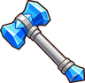
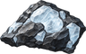
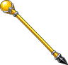
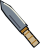
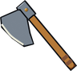
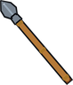
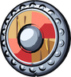

Pine Logs
Obtaining
Not obtainable in this world yet (from the original FSO 1.6 catalogue).
Used to make
| Item | Skill | Needs | Where |
|---|---|---|---|
| Blacksmithing 30 | 2 × | Anvil | |
 Ice Hammer ×1 | Blacksmithing 48 | 3 ×  Chunk of Ice, 1 × Pine Logs | Anvil |
 Gold Staff ×1 | Fletching 40 | 2 × Pine Logs, 1 × | Fletching Bench |
| Church Pew ×1 | Carpentry 45 | 3 × Pine Logs | |
| Grand Bookcase ×1 | Carpentry 48 | 5 × Pine Logs | |
 Seax ×1 | Blacksmithing 15 | 2 × | Anvil |
 Bearded Axe ×1 | Blacksmithing 25 | 2 × | Anvil |
 Skaldmark Spear ×1 | Blacksmithing 25 | 1 × | Anvil |
 Painted Round Shield ×1 | Carpentry 15 | 3 × Pine Logs, 1 × | |
| Huscarl Shield ×1 | Blacksmithing 40 | 2 × | Anvil |